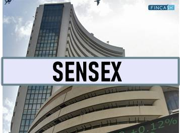

History of Stock Markets

Stock markets have a long and rich history, dating back to the 17th century. They evolved from informal gatherings of traders in open marketplaces to highly organized and electronically-driven exchanges. The concept of stock ownership and trading played a pivotal role in the development of modern economies. Stock markets facilitate the buying and selling of shares, allowing individuals and institutions to invest in companies and participate in their growth. Throughout history, stock markets have been instrumental in raising capital for businesses, stimulating economic growth, and providing opportunities for wealth creation. They have adapted and transformed over time, embracing technology and global connectivity to become vital components of the financial world.
Nifty
Nifty (Nifty 50) Nifty, also known as the Nifty 50, is a stock market index in India. It is the flagship index of the National Stock Exchange (NSE) and represents the performance of the 50 largest and most actively traded companies listed on the NSE. Nifty is a key indicator of the Indian equity market and is widely used by investors, traders, and financial experts to gauge the overall health and sentiment of the Indian stock market. The index is calculated using the free-float market capitalization-weighted methodology, which means that the stocks with higher market capitalization have a greater impact on the index's movements. Nifty provides a snapshot of the Indian economy and is a valuable tool for tracking market trends and making investment decisions.
Sensex
Sensex, officially known as the S&P BSE Sensex, is the benchmark stock market index of the Bombay Stock Exchange (BSE) in India. It consists of 30 well-established and financially sound companies from various sectors. Sensex is one of the key indicators of the Indian stock market and serves as a barometer for measuring its overall performance. It is widely tracked by investors, financial institutions, and analysts to assess market trends and sentiments. The index provides valuable insights into the Indian economy and is a fundamental tool for making investment decisions.